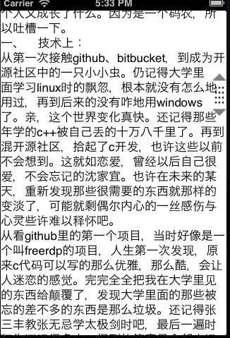
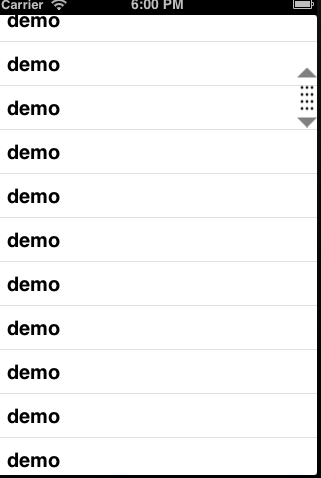

在android平台中listview有一个thumb手机样式的拖动条，可以快速的拖动列表。
在ios上这个却是没有的。
在进行之前先来看一个场景，很多ios应用在看列表时，都会动态加载更多，然后随着列表项越来越多时。再到最上面时滚动就比较的费时，读一些内容软多的文字时也会碰到这种情况。
zaker上面看文章时也会一个快速拖动条，看新闻体验就比较的好。
这个手机样式图下图。
当然上图中的手指并不是图，是通过代码实现的。上面是table做的测试。下面是一个scrollview结果的图形。
一、下面先说说那个手指样式类图实现原理。
手指图是上下都是一个三角形，通过path画一个三角形，然后将图形context反转再画一个三角。
中间部分是一个pattern模式图形.
画三角
/**
* /\
** --
* | |
* \/
*/
CGRect bounds = self.bounds;
CGMutablePathRef pathref = CGPathCreateMutable();
CGContextSaveGState(ctx);
CGContextSetLineWidth(ctx, 2);
CGContextSetFillColorWithColor(ctx, [UIColor grayColor].CGColor);
CGPathMoveToPoint(pathref, NULL, bounds.origin.x + bounds.size.width / 2, 0.f);
CGPathAddLineToPoint(pathref, NULL, 0.f, kTriangleHeight);
CGPathAddLineToPoint(pathref, NULL, bounds.size.width, kTriangleHeight);
CGPathCloseSubpath(pathref);
CGContextAddPath(ctx, pathref);
CGContextDrawPath(ctx, kCGPathFill);
CGContextRestoreGState(ctx);
CGContextSaveGState(ctx);
CGContextTranslateCTM(ctx, 0.f, bounds.size.height);
CGContextScaleCTM(ctx, 1.f, -1);
CGContextSetLineWidth(ctx, 2);
CGContextSetFillColorWithColor(ctx, [UIColor grayColor].CGColor);
CGContextAddPath(ctx, pathref);
CGContextDrawPath(ctx, kCGPathFill);
CGContextRestoreGState(ctx);
CGPathRelease(pathref);
2、模式画图
1.创建pattern
CGPatternRef CGPatternCreate ( void *info,//传递给画图回调函数的参数 CGRect bounds,//每一个单元格的大小，上图里面就是一个小圆 CGAffineTransform matrix,//变换矩阵 CGFloat xStep,//画完一个格后，x轴偏移 CGFloat yStep, CGPatternTiling tiling, bool isColored, const CGPatternCallbacks *callbacks//画图回调 );
2.完整代码
static const CGPatternCallbacks callbacks = { 0, &drawCellCallback, NULL };
CGPatternRef pattern = CGPatternCreate(0, CGRectMake(0.0, 0.0, 6, 6), CGAffineTransformIdentity, 5, 7, kCGPatternTilingConstantSpacing, true, &callbacks);
CGContextSetFillPattern(ctx, pattern, α);
CGPatternRelease(pattern);
CGContextFillRect(ctx, CGRectMake(2.f, kTriangleHeight + 4, bounds.size.width - 4, bounds.size.height - 2 * kTriangleHeight - 8));
CGContextRestoreGState(ctx);
二、然后就是实现触摸滚动了。